Overview
This project involved implementing various ray generation techniques to create properly lighted images. We start off by implementing the primitives: testing ray intersection with triangles and spheres, generating the rays, and constructing BVHs. Then, we break down the lighting into different subcomponents, from zero bounce to direct lighting to indirect lighting. Whenever a ray hits a surface, we figure out what the direct lighting should look like by using shadow rays. For indirect lighting, we utilize Russian Roulette and recursion to recursively cast rays to random directions. With all these different lighting techniques, we are able to develop globally illuminated renders. Adaptive sampling was also implemented so we can determine when to stop sampling.
Overall, we thought this project was a lot of fun. It was interesting to see how relatively simple recursive steps could produce realistic lighting results. It was also cool to implement BVH and see the speedup from it.
Part 1: Ray Generation and Intersection
Ray Generation
When generating a ray, we need to figure out the origin and the direction of the ray. There are various different coordinates and spaces to consider — image coordinates, camera space, and world space — and points must be transformed to and from these spaces. We start off with a normalized pixel position that is in image coordinates (x, y). These coordinates must first be transformed to camera space, then the ray must be generated in the camera space, and finally the ray is transformed to a ray in world space.
Given normalized (x, y) image coordinates as input to Camera::generate_ray(...), we first define the bottom left and top right corners of the camera space using the values in the camera space diagram in the spec. Then, we can linearly interpolate the (x, y) positions to camera space using the equation:
Vector3D coordInCameraSpace = Vector3D(x * topRight.x + (1 - x) * bottomLeft.x, y * topRight.y + (1-y) * bottomLeft.y, -1.0);
Given this coordinate, we know the generated ray will have the origin at the camera origin of (0,0,0) and direction of coordInCameraSpace. We transform the direction from camera space to world space by multiplying the coordInCameraSpace by c2w and transforming the origin to world space by adding pos to it. We can then create the final ray with this origin and direction, setting min_t = nClip, and max_t = fClip.
Generating Pixel Samples
Given pixel coordinates in the unnormalized image space, we need to update the sample buffer’s corresponding pixel with the integral of radiance over this pixel. To find this integral of radiance, we compute an average of ns_aa random sample rays’ estimated scene radiance. To do this, we loop through ns_aa times and get a random offset in the grid using gridSampler. We add this offset to the origin and generate a ray using a normalized version of this new point. Finally, we estimate the radiance using est_radiance_global_illumination and add this to a running total. Once we are out of the loop, we return the average radiance (running total of radiance / ns_aa).
Ray-Triangle Intersection
A ray can be represented by the equation r(t) = o + td, where t is in the range [0, infinity). Given a triangle with three vertices P0, P1, and P2, we can use Barycentric coordinates to get the equation pointInsideTriangle = b1*P1 + b2*P2 + (1 - b1 - b2)*P3. When we set r(t) = pointInsideTriangle, we can know which values cause an intersection between a ray and triangle by finding the values b1, b2, and t. To solve for these values, we used the Moller Trumbore Algorithm which defines various matrices and uses matrix multiplication to solve for the three unknowns. After applying this algorithm, the t value needs to be checked to ensure that it is in the range [min_t, max_t]. Otherwise, it is ignored. If we do find a valid intersection, the ray’s max_t is updated to be this t so that in the future we only consider closer intersection points. For Triangle::intersect(), we also update the isect struct with the information about the intersection, including the t value, normal at the point of intersection, the primitive, and the bsdf.
Ray-Sphere Intersection
A sphere can be described by the equation (p - c)^2 - R2 = 0, where p is some point on the sphere, c is the origin, and R is the radius. A ray can be represented by the equation r(t) = o + td, where t is in the range [0, infinity). The intersection of the two can then be solved by setting p = o + td so that we get (o + td - c)^2 - R^2 = 0. Given this quadratic equation, we can use the quadratic formula to solve for t as shown in the class slides. The number of t values returned denotes the type of intersection (two means it goes through the sphere, while one means it is only tangent to the sphere). Given the two time values from the quadratic equation, we check to ensure that they are inside the range [min_t, max_t] and then update the ray’s max_t to be the minimum of the two times. For Sphere::intersect(), we also update the i Intersection struct with the information about the intersection, including the t value, normal at the point of intersection, the primitive, and the bsdf.
Triangle Intersection Alg (detailed)
For the triangle intersection algorithm, we used the Moller Trumbore algorithm to help calculate the intersection. To understand this algorithm, we can first look at the unknowns we have: the intersection time t and the two barycentric coordinates variables. Given the ray intersection equation r(t) = o + t*d and the triangle equation pointInsideTriangle = b1*P1 + b2*P2 + (1 - b1 - b2)*P3, we can set these two to be equal:
r(t) = pointInsideTriangle = o + t*d = b1*P1 + b2*P2 + (1 - b1 - b2)*P3
Given this, we can pull out the unknowns and rearrange the equations so that we get:
[-D (p1 - p0) (p2 - p1)] * [t b1 b2]^T = (o - p0)
Then, Moller Trumbore uses Cramer's Rule, which gives a solution to a system of linear equations in terms of a determinant. This allows us to find the t, b1, and b2 unknowns. From there, we check if t is in the range [min_t, max_t] and if it is, we set the isect struct’s values appropriately. The isect normal is set to n1 * (1 - b1 - b2) + n2 * b1 + n3 * b2.
Image examples with normal shading
|
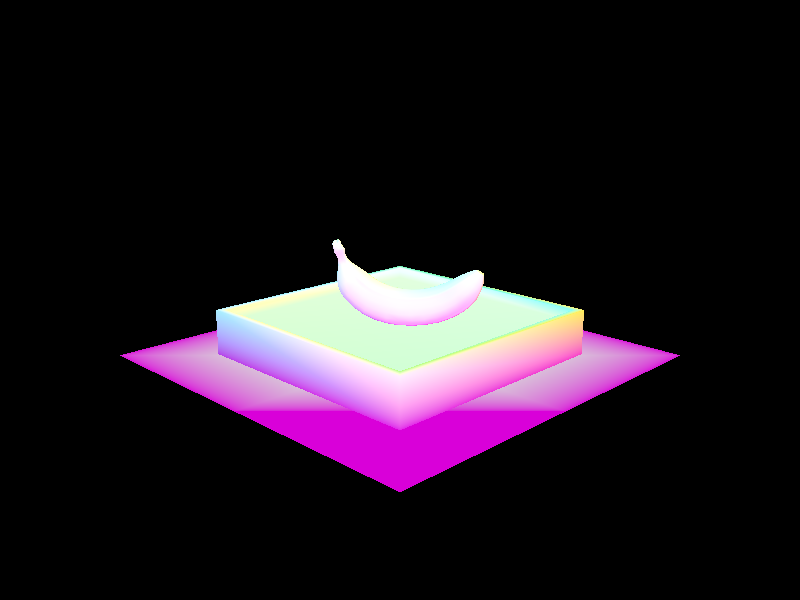
|
|

|

|
Part 2: Bounding Volume Hierarchy
BVH Construction
We first compute the bounding box for all the primitives by looking through the primitives from the start to end primitive and getting the primitive’s bounding box. We then expand the bounding box by calling the expand() function and passing in the primitive’s bounding box. We then create a new BVHNode with this bounding box. We will first check if this is a leaf node by checking if the number of primitives is less than or equal to the max_leaf_size. If it is a leaf node, we set the start and end of the BVH node to the appropriate primitives and return this node. If it isn’t a leaf node, we will then need to recurse to build the BVH. First, we need to find a split point using a heuristic of choice. For our implementation, we first found the largest axis to split on by finding the largest extent dimension for the bounding box (comparing bbox.extent.x, bbox.extent.y, and bbox.extent.z). We then calculated the split point by finding the average of the centroid values for this largest axis. Using this split point, we split the primitives into either a left or right vector of primitives. If either the left or right are empty, we need to split the full one into half so that we aren’t infinitely recursing down one sub-part of the BVH. Splitting it in half allows us to maintain a somewhat balanced BVH. Then, we recursively call construct_bvh() on the left and right vectors, assign these results to this current BVH node’s l and r variables, and return the root BVH node.
Large image examples with normal shading

|
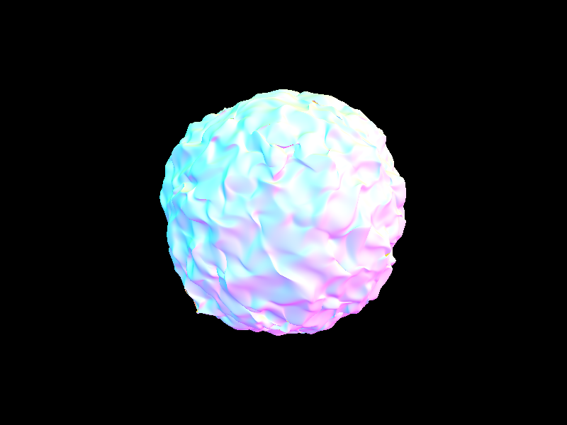
|
|
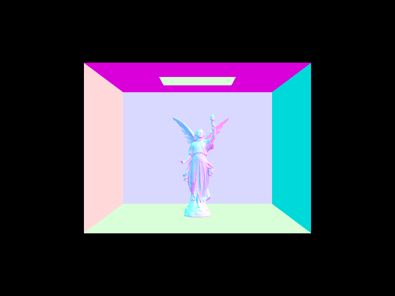
|
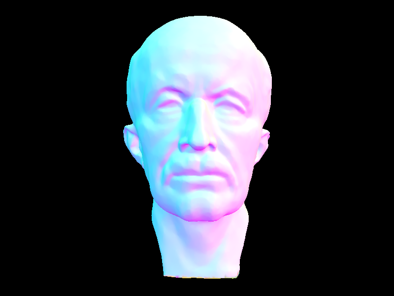
|
Comparing render times
When testing two different scenes to measure the speed with and without BVH acceleration, we found a drastic improvement in the rendering time when using BVH acceleration. This is due to the fact that the BVH acceleration algorithm allows us to discard different collections of primitives that we know a ray will not intersect, essentially performing a binary lookup of the subsection of the scene that we are interested in. Even though we have to construct the BVH, which takes up additional time and space, the BVH’s speedup is still really good when dealing with large complex renders with the two below. Overall, the ideal runtime difference goes from a linear runtime without BVH to a log runtime with BVH.
| File name | With BVH (seconds) | Without BVH (seconds) |
|---|---|---|
| maxplanck.dae | 0.1322 | 89 |
| cblucy.png | 0.3572 | 98 |
Part 3: Direct Illumination
Diffuse BSDF
Before implementing any of the direct lighting functions, we need to model the distribution of light using a BRDF function. Since we are working with Lambertian surfaces, which are perfectly diffuse and have equal amounts of light scattered from the incident direction to the outgoing direction, this BRDF function will just return a constant regardless of the incoming and outgoing light direction. This constant value is the reflectance / pi.
Uniform Random Sampling
To implement uniform random sampling, we implement the estimate_direct_lighting_hemipshere() function. First, we need to make the coordinate system so that the normal of the hit point is aligned with the Z direction (done for us in the source code). Then, we get the w_out direction that any outgoing light will take by taking the inverse direction of the ray (also done for us). Repeating in a loop for num_sample times, we get a random sample using the hemisphereSampler() and then convert the sampled w_in to world coordinates. We create a shadow ray with the origin being the hit point and the direction being this w_in. We set the min_t to EPS_F as an offset to avoid precision issues with floating points. Then, we see if the shadow ray intersects anything. If it does, we add the intersection’s emission weighted by 2 * PI * cos(w_in) * isect.bsdf->f(w_out, w_in) to a running total L_out. After the loop, we average the L_out by dividing by num_samples and return this value.
Importance Sampling
For importance sampling, we implement the estimate_direct_lighting_importance() function. Importance sampling helps make the results less noisy. This method was very similar to the above method, except we are now sampling the light sources directly which makes it a more efficient and better sampling method. For every SceneLight, we first check the type of light. If the light is a point source as determined by is_delta_light(), we only need to sample once. Otherwise, we need to sample ns_area_light times. For every time we need to sample, we get the sampled vector by calling the sample_L() function with the given hit point. This function also returns the pdf. We convert the sampled vector to object coordinates and check if the z value is less than 0. If it is, this means that the light will be behind our surface so we can just continue to the next sample. If it isn’t, we can create a shadow ray using the hit point as the origin and the sampled vector as the direction. We set max_t to the distance to the light - EPS_F and min_t to EPS_f per the spec to avoid those numerical precision issues. We then check if this shadow ray interests anything and if it doesn’t, we add the sampled vector weighted by the cos(sampled vector) * isec.bsdf->f(w_out, sampled vector in object coordinates) * 1/pdf returned by sample_L() to a running total. Before going on to the next scene light, we add this running total averaged by ns_area_light to L_out and return L_out at the end of the function.
Image examples
|
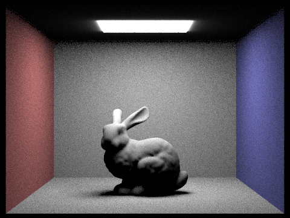
|

|

|
|
Image examples with different light rays
|
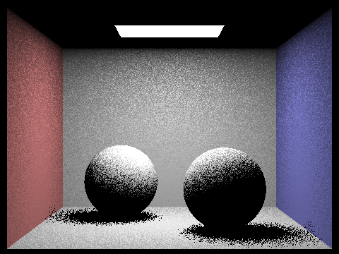
|
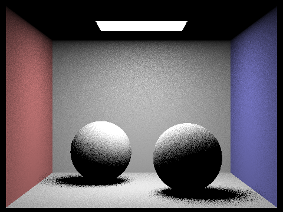
|
|
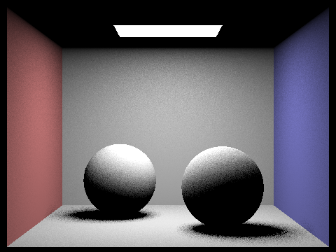
|
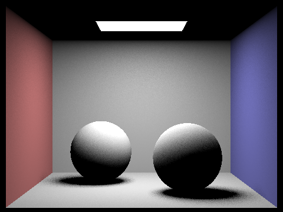
|
Clearly, there’s a lot more noise with fewer light rays. This is due to the fact that with fewer light rays, we cannot approximate the shadows and light-intersection areas as well. This results in more noise.
Comparing the results between the two sampling methods
Overall, we can see that importance sampling is overall better. There is significantly less noise in importance sampling results compared to uniform hemisphere sampling. This can be attributed to the fact that with uniform hemisphere sampling, only some of the rays from the hit point will actually intersect with a light source. This results in the dark noise seen in the hemisphere sampling results. There is also a bit of blur in the uniform hemisphere sampling near the light source which is not present in the lighting sampling. The light sampling method also ran faster because it directly samples all the lights rather than taking random samples in a hemisphere.
Part 4: Global Illumination
Indirect lighting function implemenation
To implement the indirect lighting function, we made a variable called L_out that held the accumulated light throughout the function. We started by adding the one bounce radiance illumination, or direct illumination, to the sum. This is the amount of light that is at that point. Then, we check whether the max_ray_depth is less than 1 or if the ray’s depth is less than 1–if either of these are true, then we do not want to calculate the effects of the ray bouncing further, and we simply return the one bounce radiance.
We take a sample of the bsdf using importance sampling, storing the returned direction and pdf values into their appropriate variables. Then, we created a ray with its origin at the offset intersection point and a direction that is equal to the incoming radiance direction in world coordinates. Then, we set the min_t of the new ray to EPS_F and reduce the depth of the ray, used to check the base case in recursive calls.
Finally, we check if the new ray we created intersects the bounding volume hierarchy, which would indicate that we should try to continue with the indirect illumination. If there is an intersection, we recursively called at_least_one_bounce_radiance to see if there would be further intersections with the ray that is bouncing off the intersection point. We check if the max_ray_depth is equal to the ray’s depth–if so, this means that we are only doing one bounce, and so when we scale the function, we multiply by the previously calculated bsdf value and the cosine factor, then divide out the pdf. Otherwise, we need to check whether or not to continue with more bounces. We used a continuation probability of .6, so if the coin_flip function returned true (as determined by P=.6) and the depth was greater than 1, we scaled by the same factors, but also divided by the continuation probability. This process was done in order to maintain the unbiased nature of the estimator.
Images rendered with global illumination
|
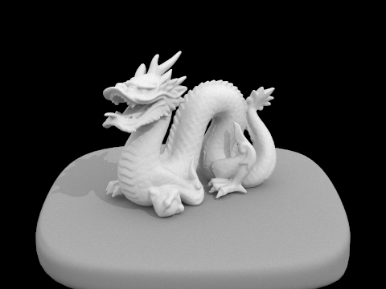
|
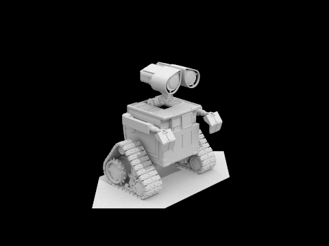
|
Only direct illumination and only indirect illumination
|
|
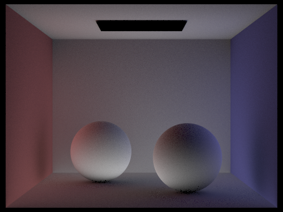
|
Render view comparisons with different max ray depth
|
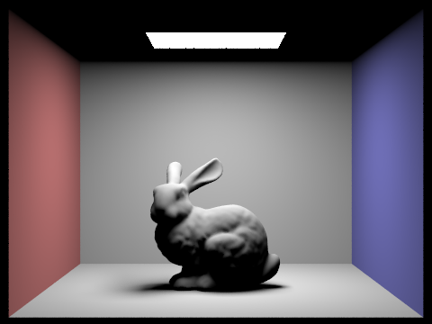
|
|
|
|
|
|
|
Different sample-per-pixel rates
|
|
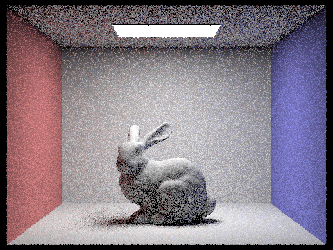
|
|
|
|
|
|
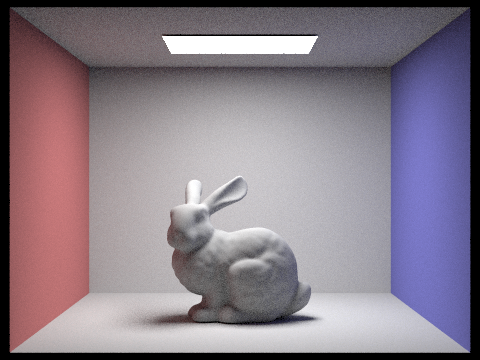
|
|
|
Part 5: Adaptive Sampling
For adaptive sampling, we introduced three new variables: s1, s2, and samples_used. s1 stored the sum of the illuminance of each sample, s2 stored the sum of the illuminance squared, and samples_used was a counter incremented to keep track of how many samples contributed to the radiance. This is the value that the total radiance that we were keeping track of was eventually divided by in order to get the final lighting for that pixel.
We ran through the same for loop done in a previous part to get the radiance of a generated sample. But each time, we would increment that number of samples used. At the end of each iteration of the for loop, we checked whether the number of samples was a multiple of samplesPerBatch, which is a parameter that we could set to modify our adaptive sampling. If so, we calculated the mean, variance, and convergence. Finally, we checked if the convergence value was less than or equal to the product of the maxTolerance, another command line parameter, and the mean. If so, we broke out of the for loop, since we determined that the value had converged, and returned the average radiance. We also updated the sampleCountBuffer to show how many samples had been used for that pixel and generate the rate maps such as the one seen below.
|
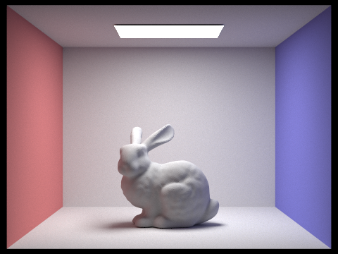
|
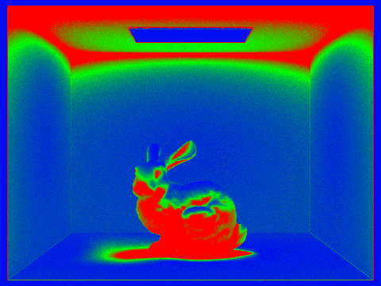
|
In this picture of the bunny, we can see that compared to previous renders, the image is much less noisy. Comparing to the sample rate map, we can see that certain areas on the bunny and the ceiling have very high sampling rates, versus other areas like the wall and the light have very low sampling rates. We noticed that the areas where there was less variation in lighting, such as where the light was hitting directly, there were less samples taken. This tended to be areas that were brighter overall. However, in areas where the light directly did not hit, such as the ceiling and the underside of the rabbit, there were more samples taken. This makes sense because these areas that were not directly lit relied more heavily on the multiple bounces of light to determine their radiance values.
Partner Reflection
As partners, we collaborated on all the parts together, assigning each partner to be in charge of various subtasks and then helping each other debug. Since all the tasks follow and build on each other, we needed to make sure that we didn’t skip parts while implementing the project because that could generate inaccurate results for the later parts. Because we both had a lot of midterms around this time, we found it harder to get time to work side by side for this project and spent more time virtually debugging things which was more challenging than debugging in person. We learned that it’s often challenging to understand other people’s code, especially because there are so many variables that are already defined for us in this project. Overall, we thought we did a pretty good job working as partners (although we’re now three slip days in and had to run some code overnight so we’ve definitely seen better days).